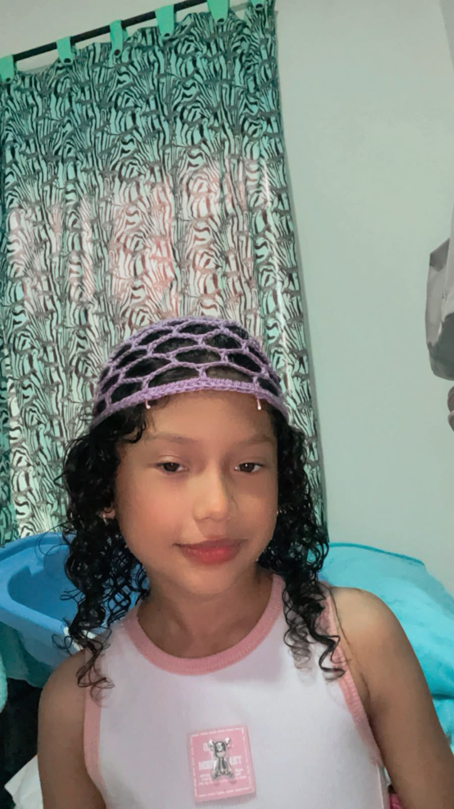
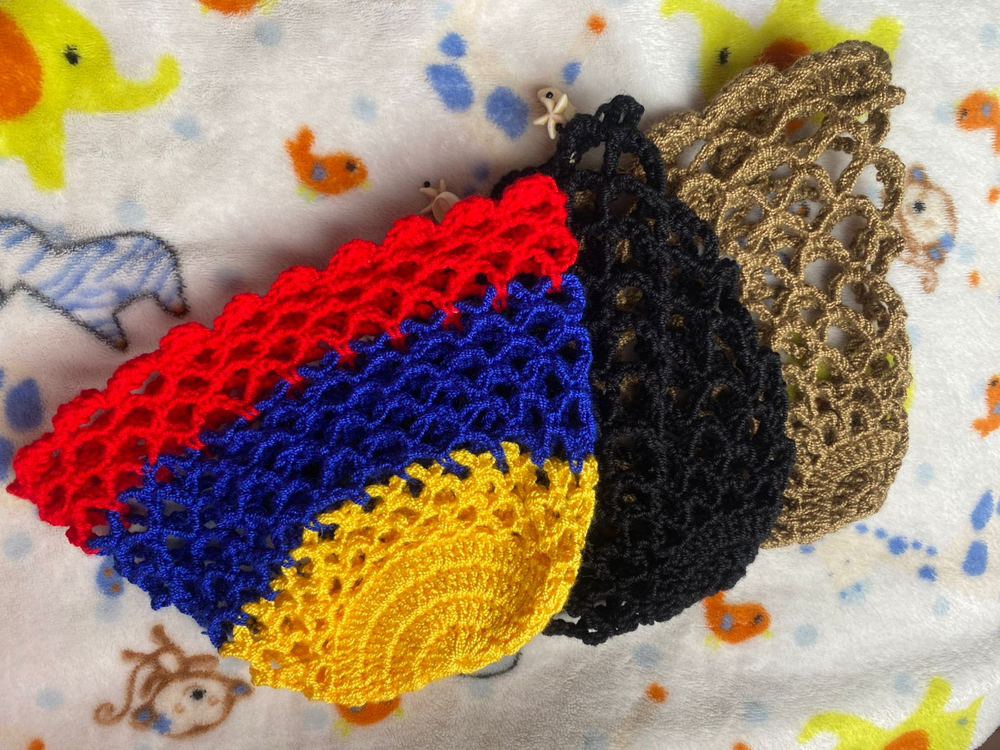
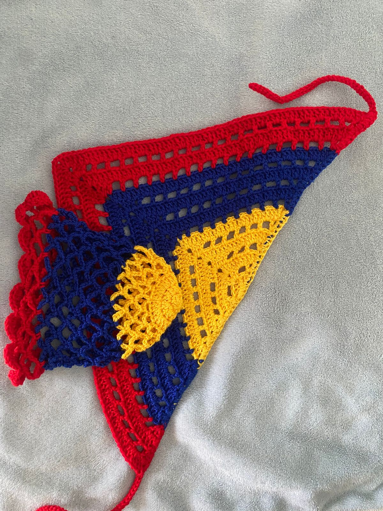
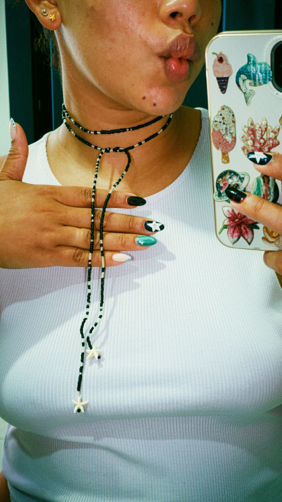

Descubre nuestra encantadora colección de accesorios tejidos a mano, donde cada pieza es una obra de arte única. Desde gorros cálidos y elegantes hasta collares suaves, nuestros accesorios están diseñados para brindarte estilo y comodidad en cada temporada.



